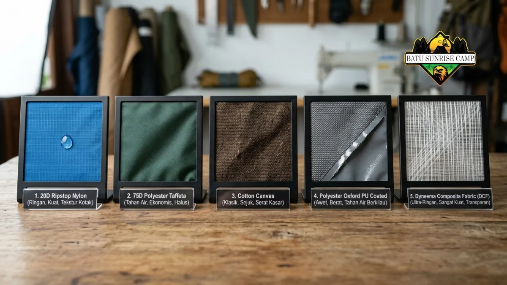

Cara memilih tenda camping yang tepat adalah dengan mempertimbangkan kapasitas, jenis lapisan, material kain, serta ketahanan terhadap air dan angin sesuai medan yang akan dituju.
Bagaimana Cara Memilih Kapasitas Tenda Camping yang Ideal?
Cara memilih kapasitas tenda camping yang ideal adalah dengan mempertimbangkan jumlah orang, seperti untuk tenda keluarga, atau menambah satu kapasitas ekstra untuk ruang barang bawaan.
Cara memilih kapasitas tenda camping yang ideal adalah dengan menambahkan satu kapasitas ekstra dari jumlah pengguna sebenarnya agar tersedia ruang untuk barang bawaan.
Tenda dengan label kapasitas dua orang pada praktiknya sering terasa sempit bila digunakan berdua dengan membawa ransel besar di dalamnya.
Banyak pendaki berpengalaman memilih tenda berkapasitas tiga orang untuk digunakan berdua agar tersisa ruang penyimpanan yang memadai.
Pertimbangan ini menjadi semakin penting saat camping dalam durasi lebih dari satu malam, karena kebutuhan ruang gerak dan penyimpanan barang cenderung meningkat.
Selain jumlah pengguna, bentuk tubuh dan kebiasaan tidur turut memengaruhi kenyamanan di dalam tenda.
Pengguna yang cenderung banyak bergerak saat tidur umumnya lebih nyaman dengan tenda berbentuk dome yang memberikan ruang kepala lebih tinggi dibandingkan tenda berbentuk tunnel yang lebih ramping.
Apa Perbedaan Tenda Single Layer dan Double Layer?
Perbedaan tenda single layer dan double layer terletak pada jumlah lapisannya, di mana tenda double layer sering menjadi rekomendasi tenda camping karena meminimalisir kondensasi.
Perbedaan tenda single layer dan double layer terletak pada jumlah lapisan kain, di mana double layer memiliki lapisan luar tambahan yang disebut flysheet untuk mengurangi kondensasi.
Tenda single layer hanya memiliki satu lapisan kain yang berfungsi sekaligus sebagai pelindung dan dinding dalam.
Desain ini membuat tenda lebih ringan dan cepat didirikan, namun rentan terhadap kondensasi karena uap air dari napas dan suhu tubuh dapat menempel langsung pada dinding bagian dalam.
Tenda double layer menambahkan flysheet sebagai lapisan luar yang terpisah dari dinding dalam berbahan mesh.
Celah udara di antara kedua lapisan ini membantu mengurangi kondensasi sekaligus meningkatkan sirkulasi udara di dalam tenda.
Meskipun sedikit lebih berat, tenda double layer umumnya lebih direkomendasikan untuk camping di area lembap atau musim hujan.
Material Apa yang Paling Cocok untuk Tenda Camping?
Material yang paling cocok untuk tenda camping adalah ripstop nylon atau polyester yang menjadi ciri ciri tenda berkualitas dan tahan lama di berbagai cuaca.
Material yang paling cocok untuk tenda camping umumnya adalah ripstop nylon atau polyester karena kombinasi bobot ringan, daya tahan robek, dan ketahanan air yang baik.
Ripstop nylon memiliki pola tenunan khusus yang mencegah robekan kecil melebar menjadi robekan besar, sehingga cocok digunakan pada medan berbatu atau berduri.
Material ini juga cenderung lebih ringan dibandingkan kain katun, sehingga banyak digunakan pada tenda kelas mendaki gunung yang mengutamakan efisiensi berat bawaan.
Polyester memiliki karakteristik lebih tahan terhadap sinar ultraviolet dibandingkan nylon, sehingga warnanya cenderung tidak cepat pudar meski sering terpapar matahari.
Sebagian produk tenda modern menggabungkan kedua material ini dengan lapisan coating tambahan seperti polyurethane untuk meningkatkan ketahanan air secara signifikan.

Perbandingan material tenda memengaruhi daya tahan dan kenyamanan.
Bagaimana Cara Mengecek Waterproof Rating Tenda?
Cara mengecek waterproof rating tenda adalah dengan melihat angka hydrostatic head, yang menentukan apakah itu tenda camping terbaik untuk curah hujan tinggi atau tidak.
Cara mengecek waterproof rating tenda adalah dengan melihat angka hydrostatic head yang biasanya tertera pada spesifikasi produk, di mana angka lebih tinggi menunjukkan ketahanan air lebih baik.
Hydrostatic head diukur dalam satuan milimeter dan menunjukkan seberapa tinggi kolom air yang dapat ditahan oleh kain sebelum air mulai merembes.
Tenda dengan rating rendah umumnya cukup untuk camping di area yang jarang hujan, sementara tenda dengan rating lebih tinggi lebih disarankan untuk area dengan curah hujan tinggi seperti pegunungan tropis.
Selain material kain, bagian jahitan tenda juga perlu diperhatikan karena menjadi titik paling rentan terhadap rembesan air.
Tenda berkualitas umumnya dilengkapi dengan seam tape atau lapisan penutup jahitan untuk mencegah air masuk melalui celah-celah kecil pada bagian tersebut.
Mengenal Berbagai Jenis Tenda Camping
Berbagai jenis tenda camping meliputi tenda dome, tunnel, hingga tenda keluarga yang masing-masing memiliki fungsi spesifik sesuai medan dan kebutuhan perjalanan.
Memahami jenis tenda camping sangat penting agar Anda tidak salah pilih saat membeli atau menyewa. Tenda dome adalah jenis paling populer karena mudah didirikan dan tahan terhadap angin.
Di sisi lain, tenda tunnel memberikan ruang interior yang luas, sangat cocok jika Anda membawa banyak peralatan, namun membutuhkan proses mendirikan yang sedikit lebih rumit.
Untuk liburan beramai-ramai, tenda keluarga (family tent) adalah rekomendasi tenda camping yang paling pas karena didesain dengan beberapa ruang terpisah atau kabin ekstra besar untuk privasi dan kenyamanan maksimal.
Dengan mengetahui ciri ciri tenda yang tepat sesuai kebutuhan, Anda akan menemukan tenda camping terbaik untuk setiap jenis petualangan Anda.
Kesimpulan
Memilih tenda camping terbaik bergantung pada pemahaman kita terhadap kapasitas, material, dan jenis tenda camping yang sesuai dengan kebutuhan.
Memilih tenda camping yang tepat berarti menyeimbangkan kapasitas, jenis lapisan, material kain, dan waterproof rating sesuai medan yang akan dituju.
Kapasitas satu tingkat lebih besar dari jumlah pengguna, tenda double layer untuk area lembap, serta material ripstop nylon atau polyester dengan seam tape yang baik menjadi kombinasi yang paling disarankan bagi kebanyakan pendaki.